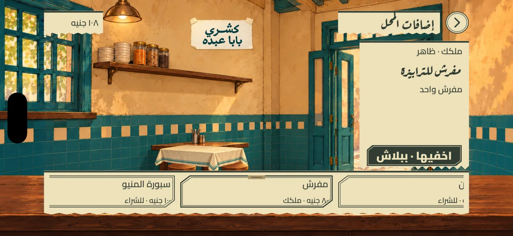
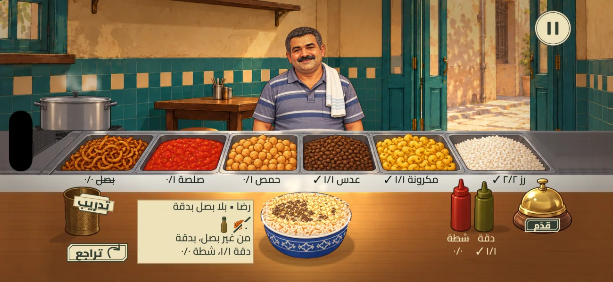

Hassan
“No onions, no garlic vinegar, and no chili.”

An Egyptian cooking game · Played in Arabic
Pull up the shutter at Baba Abdo’s. Hassan skips the onions. Someone else wants garlic vinegar and extra chili. Listen closely and build each neighbor’s bowl.
From the first scoop of rice to the ring of the bell.

Rice, pasta, lentils, chickpeas, tomato sauce, fried onions. Check the ticket before you serve.

Hassan skips the onions. Hold a ticket to read the full order while the clock pauses.

Set aside your earnings from a shift and pick out something for the shop.

Open up on day two and see what Amina has to say when she stops by again.

After the first week, practice without a timer. Your shop balance stays the same.
Two familiar faces from your first week behind the counter.
“No onions, no garlic vinegar, and no chili.”
“Good morning! Thought I’d stop by again.”